CS184/284A Fall 2026 Homework 1 Write-Up
Link to webpage: (TODO) cs184.eecs.berkeley.edu/fa26
Link to GitHub repository: (TODO) cs184.eecs.berkeley.edu/fa26
Overview
Give a high-level overview of what you implemented in this homework. Think about what you've built as a whole. Share your thoughts on what interesting things you've learned from completing the homework.Task 1: Drawing Single-Color Triangles
How my triangles are rasterized
- Fix the winding order: I compute the signed area \( (x_1-x_0)(y_2-y_0) - (y_1-y_0)(x_2-x_0) \). If it is negative, I swap vertices 1 and 2, so every triangle is counter-clockwise. If it is zero, the triangle is degenerate and I skip it.
- Set up three edge functions: For each directed edge \( P_i \to P_j \), I write the line test as \( E(x,y) = Ax + By + C \) with \( A = y_i - y_j \), \( B = x_j - x_i \), \( C = x_i y_j - x_j y_i \). For a counter-clockwise triangle, a point is inside when all three values are >= 0.
- Compute the bounding box: I take the floor of the smallest vertex coordinates and the ceiling of the largest, then clamp the box to the screen.
- Sample pixel centers: For every pixel \( (x, y) \) in the box, I test the sample point \(
(x+0.5,\, y+0.5) \). If all three edge functions are >= 0, I color the pixel with
fill_pixel. The test uses >= 0, so samples lying exactly on an edge are drawn, and no edge is left out!
Why this is no worse than checking the bounding box
Every sample I test lies inside the triangle's bounding box, so I never test more samples than the bounding-box method does. Some rows stop early (see the extra credit below), so the number of tests is often lower. Each test costs a constant amount of work, which is basically three additions and three comparisons.
Test 4 visualization
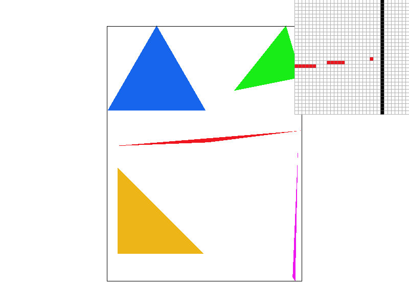
basic/test4.svg with default viewing parameters. The pixel inspector shows the thin
red
triangle's tip, where one sample per pixel breaks the shape into disconnected pixels (aliasing)!
Extra credit: optimizations
- Incremental edge functions: I evaluate the three edge functions once, at the first sample of each row. Moving one pixel right changes E by exactly A, so each later sample needs only three additions instead of three multiply-adds. I re-evaluate at the start of every row, so floating-point error doesn't built up across rows.
- Early row exit: A triangle is convex, so each row crosses it in one continuous span. Once a row has entered the triangle and then leaves it, I stop scanning that row. This skips the empty space to the right of the triangle in the bounding box.
- Clamping the bounding box to the screen: so off-screen samples are never tested.
Timing: I timed svg.draw() in DrawRend::redraw() with clock(). Each
value is the average over 10 redraws at 1024x1024, then the median of 5 runs, on my Apple M2 Pro.
| File | Plain bounding box (ms) | + Incremental edges (ms) | + Early row exit (ms) | Speedup |
|---|---|---|---|---|
| basic/test4.svg | 0.260 | 0.281 | 0.205 | 1.27x |
| basic/test5.svg | 0.833 | 0.824 | 0.623 | 1.34x |
| basic/test6.svg | 0.625 | 0.564 | 0.434 | 1.44x |
Incremental evaluation alone changed timings by less than 10% in either direction. An optimized build does these few multiplies quickly. It seems early row exit gave a lot of gain: about 1.25-1.5x, likley because a triangle covers at most half of its bounding box, and the samples to the right of each row's span are no longer tested.
Task 2: Antialiasing by Supersampling
Why supersampling is useful
With one sample per pixel, each pixel is either fully inside or fully outside a triangle. Edges therefore look jagged, and features thinner than a pixel can break apart or vanish. These are aliasing artifacts: the triangle has detail at higher frequencies than one sample per pixel can capture. Supersampling takes several samples per pixel and averages them. Each pixel then shows roughly the fraction of its area the triangle covers. This is an approximate low-pass (blurring) filter applied before the final sampling, so edges become smooth gradients instead of hard sharp edges.
Data structure
Let n = sqrt(sample_rate). I treat sample_buffer as a higher-resolution image of
size \( (n \cdot \text{width}) \times (n \cdot \text{height}) \), stored in row-major order as
Color values. Sample \( (X, Y) \) is at index \( Y \cdot n\ \text{,}\text{width} + X \). Its
center is
at \( \big( (X+0.5)/n,\ (Y+0.5)/n \big) \) in screen space, so each pixel holds an evenly spaced n x
n grid of samples.
Changes to the pipeline
- Buffer size:
set_sample_rateandset_framebuffer_targetnow resizesample_bufferto width x height x sample_rate. This happens whenever the rate changes or the window is resized.clear_buffersresets every sample to white at the start of each frame. - Triangles:
rasterize_trianglemultiplies all vertex coordinates by n. This maps the triangle into the high-resolution sample grid. From there, the Task 1 algorithm runs unchanged. The only difference is that it writes each covered sample directly intosample_buffer. - Points and lines: not anti-ailiased.
fill_pixelnow writes the same color to all n x n samples of a pixel, so after averaging they look exactly as they did with one sample. - Resolve:
resolve_to_framebufferaverages each pixel's n x n block of samples. It converts the float average to an 8-bit value by clamping to [0, 1] and scaling by 255, then writes it torgb_framebuffer_target.
In short, I rasterize the scene at n times the resolution in each direction, then downsample by averaging. The averaging is what anti-aliased the triangles. A pixel that is 25% covered becomes a 25% blend of the triangle color and the background!
Results
|
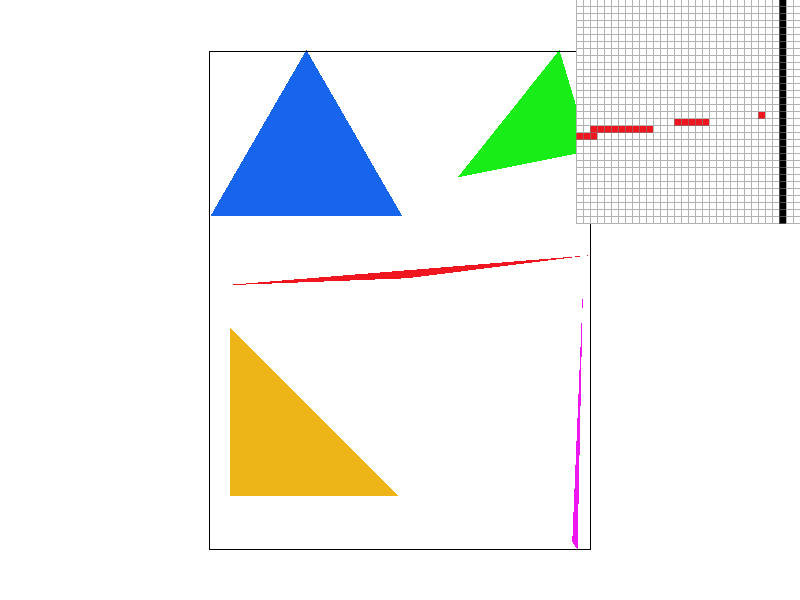 |
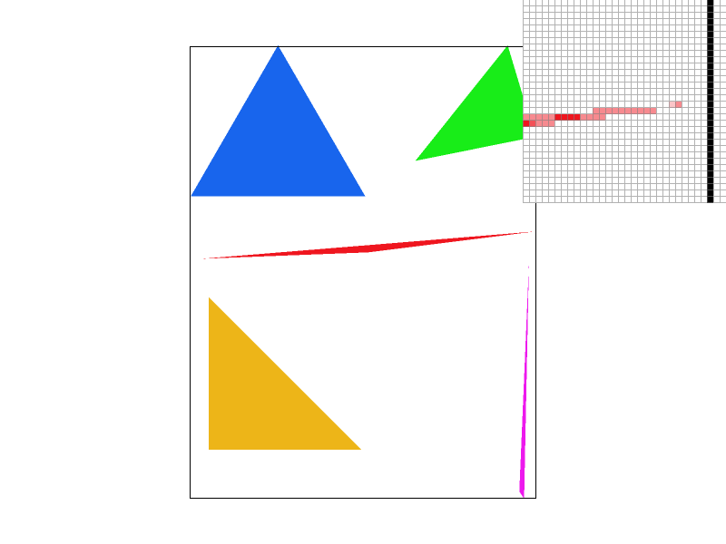 |
|
Rate 1: Near its tip, the red triangle is thinner than a pixel. Only pixels whose center happens to fall inside it are drawn, so the tip breaks into disconnected pieces with gaps between them. Every pixel is either fully red or fully white.
Rate 4: Each pixel now has a 2x2 grid of samples, so thin parts of the triangle are much more likely to hit at least one of them. The tip becomes a connected line. Partly covered pixels appear as light red.
Rate 16: The 4x4 grid allows 17 coverage levels. The shading closely follows the true fraction of each pixel the triangle covers, so the tip fades out smoothly and the edges look straighter instead of stair-stepped.
The tradeoff is memory and time. The sample buffer and the rasterization work both grow linearly with the sample rate, so rate 16 uses 16 times the memory of rate 1.
Extra credit: jittered sampling
Grid supersampling places samples at fixed, evenly spaced positions. That regular spacing is itself a signal, so a scene containing detail at a similar frequency beats against it and produces moiré patterns. Jittered sampling keeps one sample per cell of the n x n grid, but moves each sample to a random position inside its own cell (stratified jitter). The sample positions no longer share a single frequency, so the aliasing turns into high-frequency noise instead of coherent patterns.
I offset each sample by a value hashed from its position in the sample grid, rather than drawing random numbers as I go. A sample's offset is therefore the same no matter which triangle is being drawn, so two triangles that share an edge still agree on which samples they cover. Drawing fresh random numbers per triangle would let both triangles miss a sample near a shared edge and leave visible cracks.
The scene below (svg/extra/starburst.svg) is 300 thin wedges radiating from the center. The
wedges narrow toward the middle, so they sweep through and below the sample spacing. Both images use sample
rate 4.
|
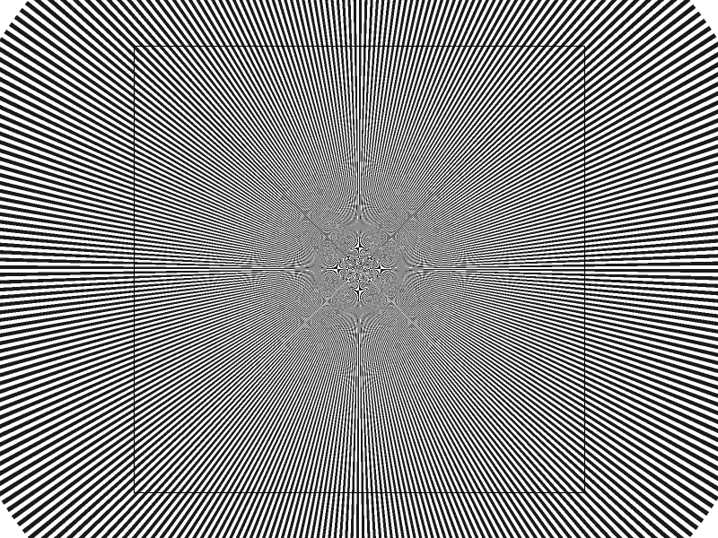 |
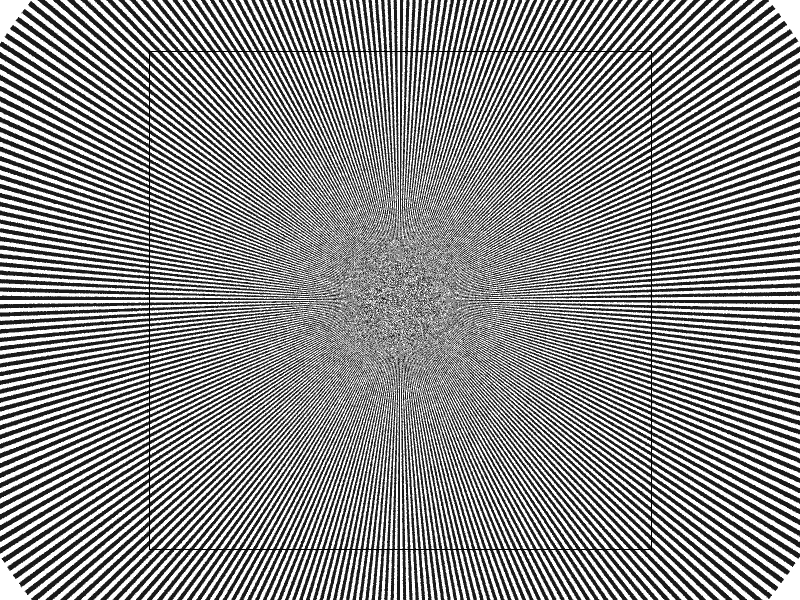 |
Near the center the wedges are thinner than a pixel, so neither pattern can resolve them; the information is simply not there at this resolution. Each one fails differently though. The grid produces star-shaped rosettes and ring patterns, which a viewer reads as real geometry. Jittering produces a gray field of noise, which reads as clearly noise/unresolved detail. Thus even though both are wrong only the grid is misleading. Away from the center, where the wedges are several pixels wide, the two look the same!
The tradeoff here is that jittering costs a bit of speed. Sample positions are no longer evenly spaced, so the edge functions cannot be updated by simple addition and the early row exit no longer applies.
Task 3: Transforms
My cubeman waves hello!
I went for a friendly wave + mid-step pose: left arm raised and waving, right arm
relaxed, one leg striding and the other kicked out with a bent knee (I'm imagining that he is facing us, by
the way). Since the base robot's limbs are
centered bars, rotating them as-is would swing each limb around its own midpoint. I therefore re-anchored
every limb at its joint with the pattern translate(joint) rotate(angle) translate(half-length),
which puts the group origin on the joint so the rotation swings the limb about it. The forearm and shin get
a second rotate at the elbow and knee. On top of the pose I gave each body part its own color
, enlarged and tilted the head slightly, and added three small
rotated squares as sparkles above the waving hand!

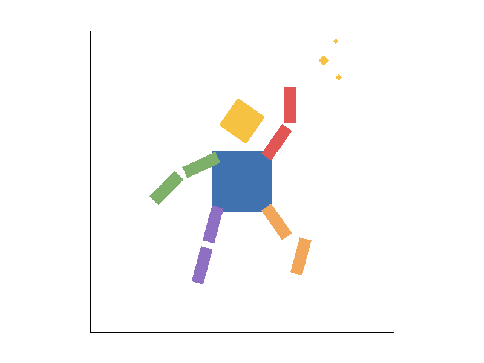
Task 4: Barycentric coordinates
Barycentric coordinates
Any point P inside a triangle can be written as a weighted average of its three vertices: \( P = \lambda_0 v_0 + \lambda_1 v_1 + \lambda_2 v_2 \) where the weights satisfy \( \lambda_0 + \lambda_1 + \lambda_2 = 1 \). These weights are the barycentric coordinates of \( P \). Each one measures how strongly the triangle "belongs" to its vertex: \( \lambda_i \) is exactly 1 at vertex \( v_i \), exactly 0 everywhere on the opposite edge, and shrinks linearly in between. Geometrically, \( \lambda_i \) is the ratio of the area of the small sub-triangle cut off by \( P \) opposite \( v_i \) to the area of the whole triangle.
Because each \( \lambda_i \) sweeps smoothly from 0 to 1 across the triangle, it is a natural interpolation weight. Assigning a color to each vertex and computing \( \text{color}(P) = \lambda_0 c_0 + \lambda_1 c_1 + \lambda_2 c_2 \) produces the unique function that is linear over the triangle and matches the three vertex colors exactly. The result is the smooth gradient below: each corner is a pure primary color, and every interior point is the blend its position dictates!
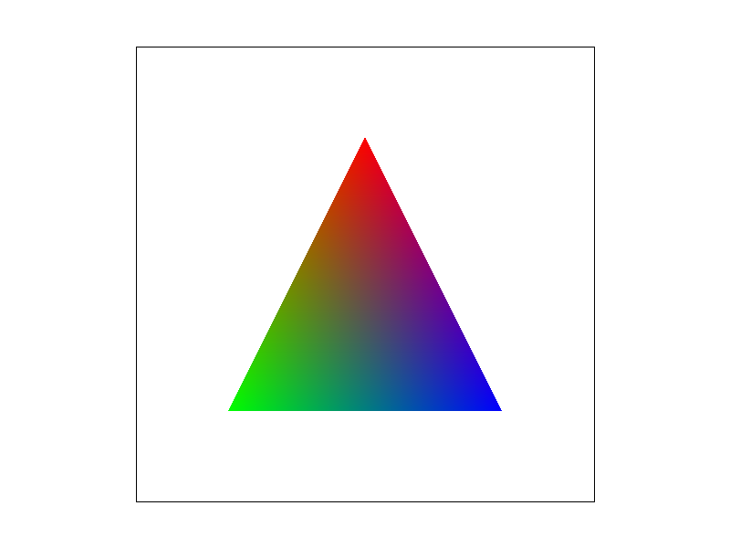
Test 7 result:
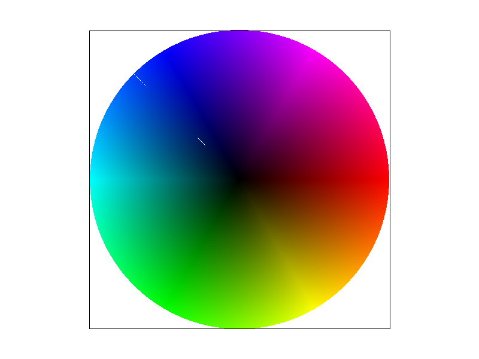
Task 5: "Pixel sampling" for texture mapping
Pixel sampling
Each vertex of a textured triangle carries a texture coordinate \( (u, v) \in [0, 1]^2 \). For every screen sample, I interpolate these coordinates to find where the sample lands on the texture, then look up color there. The texture is a grid of discrete texels, but the interpolated \( (u, v) \) is continuous and almost never falls exactly on a texel center. Pixel sampling is the rule that turns this continuous texture position into color from the nearby texels.
Implementation
rasterize_textured_triangle follows the same structure as my Task 4 function. It scales the
vertices into the supersample grid, fixes the winding order,
and walks the bounding box with edge functions. For each covered sample, the edge functions divided by the
triangle's area gives the barycentric coordinates \( \lambda_0, \lambda_1, \lambda_2 \). The sample's
texture coordinate is then \( \lambda_0 (u_0, v_0) + \lambda_1 (u_1, v_1) + \lambda_2 (u_2, v_2) \). I
store it in a SampleParams struct together with the current sampling methods, and pass that to
Texture::sample.
- Nearest: return the single texel that contains \( (x, y) \), i.e. texel \( (\lfloor x \rfloor, \lfloor y \rfloor) \), which is the texel whose center is closest. The result is clamped to the texture so that \( u = 1 \) or \( v = 1 \) stays in range.
- Bilinear: find the four texel centers surrounding \( (x, y) \). After shifting by half a texel, they are at columns \( \lfloor x - 0.5 \rfloor \) and \( \lfloor x - 0.5 \rfloor + 1 \), and likewise for rows. With \( s \) and \( t \) the fractional distances from the top-left center, I blend the top pair with weights \( (1-s, s) \), blend the bottom pair the same way, and then blend those two results with weights \( (1-t, t) \). Near the border, missing neighbors are clamped to the edge texels.
Comparison
|
|
|
|
|
|
The latitude and longitude lines on the map are only about one texel wide. "Nearest at 1 sample" breaks them into dashes. At the default view the map is minified (each pixel spans roughly 1.5-3 texels), so some texels are skipped entirely, and a line appears only where a pixel's sample happens to land on it. Coastlines are stair-stepped for the same reason. "Bilinear at 1 sample" is visibly better: each sample blends four neighboring texels, so a sample that falls next to a line still picks up part of its color, and the lines become more continuous and edges become more soft. At 16 samples, the two methods look almost identical. Averaging 16 samples per pixel already filters the texture, so the extra smoothing from bilinear interpolation isn't as apparent.
Relative differences
The two methods differ most when the texture is magnified, i.e. one texel covers several screen pixels (e.g., after zooming in). Nearest sampling then shows each texel as a visible square block, and diagonal edges become staircases. Bilinear sampling interpolates between texel centers, so the result is smoother.
The difference is small when one texel maps to roughly one pixel, since both methods then return close to the same color. When the texture has many texels per pixel, then both methods would likely alias. A pixel covers many texels, but nearest reads only one and bilinear only four, so neither averages over the pixel's full footprint.
Task 6: "Level Sampling" with mipmaps for texture mapping
Level sampling
When a texture is minified, one screen sample covers many texels. Pixel sampling alone reads only one texel (nearest) or four (bilinear), so most of the texels under the sample are skipped and the result aliases. A mipmap stores the texture at a series of resolutions: level 0 is the full image, and each level after it halves the width and height by averaging 2 x 2 blocks of the level before. Level sampling picks the level whose texels are about the size of the sample's footprint on the texture. A single lookup there then returns roughly the average color over that whole footprint.
Implementation
- Texture-coordinate differentials: In
rasterize_textured_triangle, I compute the uv at the sample \( (x, y) \) and at its neighbors \( (x+1, y) \) and \( (x, y+1) \), and store them asp_uv,p_dx_uvandp_dy_uv. The uv is a linear function of screen position within a triangle, so these steps are constant per triangle. I compute them once from the edge-function coefficients: \( \partial \lambda / \partial x = A / \text{area} \) and \( \partial \lambda / \partial y = B / \text{area} \). Each sample then adds them to its own uv. - Picking which level: (
Texture::get_level): I subtract to get the uv differences, then scale them by the full-resolution texture size to convert them into texels: \( \big( \frac{du}{dx} w,\ \frac{dv}{dx} h \big) \) and \( \big( \frac{du}{dy} w,\ \frac{dv}{dy} h \big) \). The footprint size is \[ L = \max\left( \left\| \left(\frac{du}{dx}w,\ \frac{dv}{dx}h\right) \right\|, \left\| \left(\frac{du}{dy}w,\ \frac{dv}{dy}h\right) \right\| \right) \] and the level is \( D = \log_2 L \). I clamp D to [0, last level]. A negative D means the texture is magnified, and level 0 is already the finest available. - Sampling (
Texture::sample). The pixel sampling method decides how to read inside one level, and the level sampling method decides which level(s) to read, so all six combinations work. - Supersampling: The neighbors \( (x+1, y) \) and \( (x, y+1) \) are one step in the supersample grid. At 1 sample per pixel that is one pixel as specified. At higher rates, each sample filters its own smaller footprint, and the resolve step averages the samples, so the texture is not blurred twice. At 16 samples per pixel, the level drops by \( \log_2 4 = 2 \).
Tradeoffs between the three techniques
The timings below are the median of 5 renders of texmap/test5.svg at 800x800 on an
Apple M2 Pro. They measure only svg.draw().
| Config | Time (ms) | Relative |
|---|---|---|
| Level 0, nearest pixel, 1 sample | 2.78 | 1.00x |
| Level 0, bilinear pixel, 1 sample | 3.02 | 1.09x |
| Nearest level, nearest pixel, 1 sample | 3.41 | 1.23x |
| Nearest level, bilinear pixel, 1 sample | 3.78 | 1.36x |
| Linear level, nearest pixel, 1 sample | 3.54 | 1.27x |
| Linear level, bilinear pixel (trilinear), 1 sample | 4.37 | 1.57x |
| Level 0, nearest pixel, 4 samples | 9.32 | 3.35x |
| Level 0, nearest pixel, 16 samples | 34.81 | 12.5x |
| Trilinear, 16 samples | 48.36 | 17.4x |
- Pixel sampling (nearest vs bilinear). Speed: bilinear reads 4 texels instead of 1, but only cost about 9% more here. Memory: none extra. Antialiasing: weak. It smooths magnified textures and slightly softens aliasing, but under minification it still reads only a 2 x 2 neighborhood, so most of a large footprint is ignored.
- Level sampling (mipmaps). Speed: cheap. It adds the level computation and, for linear level sampling, a second lookup. Memory: the mipmap stores every level, which adds \( \frac14 + \frac1{16} + \dots \approx \frac13 \) of the texture's size. Antialiasing: strong for minified textures, since each lookup is prefiltered over the footprint. It does nothing for triangle edges, and it tends to overblur. The footprint is approximated by a square of side \( L \), the larger of the two directions, so textures viewed at a grazing angle get blurred in both directions. Nearest-level sampling also shows visible bands where the level switches, which linear level sampling blends away.
- Supersampling (more samples per pixel). Speed: the most expensive. Cost grows linearly with the sample rate. Memory: the sample buffer grows with the rate. Antialiasing: the most general. It reduces every kind of aliasing, including triangle edges and textures in any direction, but it only raises the sampling rate by a fixed factor, so frequencies well above that rate will likely still alias.
My own texture
L_ZERO + P_NEAREST |
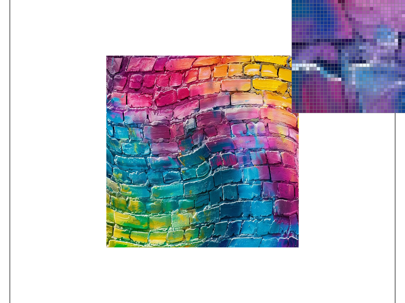 L_ZERO + P_LINEAR |
|
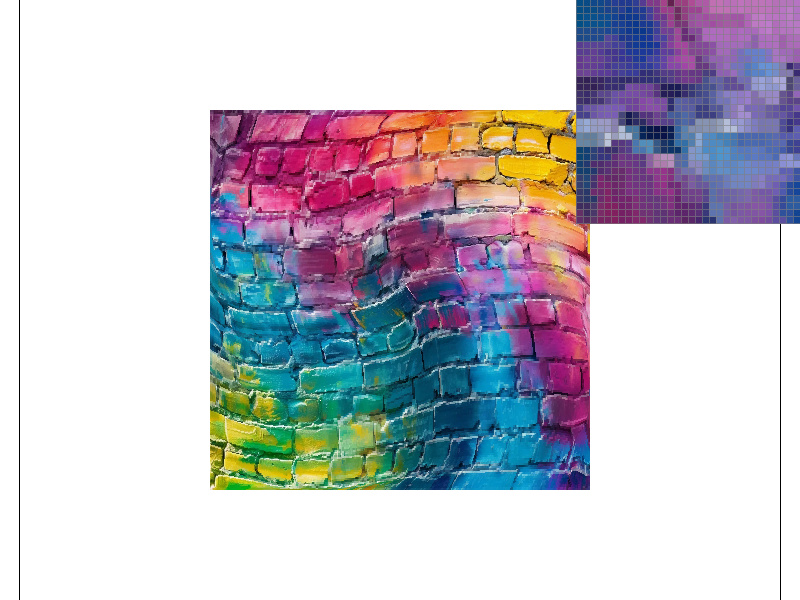 L_NEAREST + P_NEAREST |
L_NEAREST + P_LINEAR |
(Optional) Task 7: Extra Credit - Draw Something Creative!
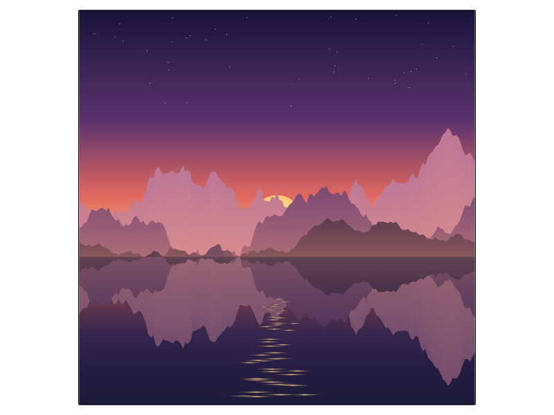
The SVG is generated with a Python script. My barycentric color interpolation from Task 4 produces the smooth gradients, and supersampling from Task 2 smooths the edges!
- Sky: 40 horizontal strips, each made of two triangles. Their colors follow a gradient from dark purple at the top to orange at the horizon. Stars are tiny diamonds.
- Sun: a fan of 48 triangles, white-yellow at the center and orange at the rim. It is drawn before the mountains, so the peaks a lot of it and just give it a sneak peak.
- Mountains: three ridges drawn from back to front, each one lower and darker than the one behind it. Each ridge line comes from 1D midpoint displacement: start with a few random heights, then repeatedly insert a midpoint between every pair of neighbours and shift it by a random amount that shrinks each round. Each mountain fades toward a warm light-purplish color near the horizon, which makes the far ridges look farther away.
- Lake: the sky gradient mirrored vertically and darkened, with the three ridges flipped about the horizon on top of it. Thin bright diamonds below the sun form its reflection on the water.